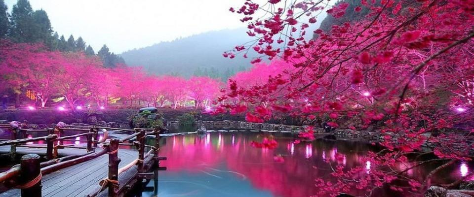
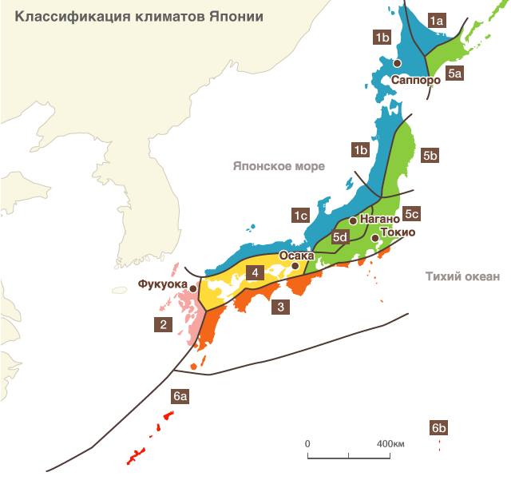
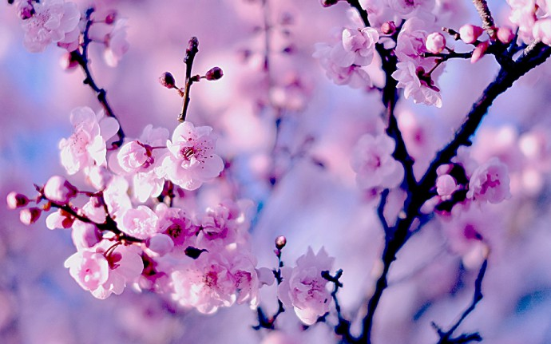
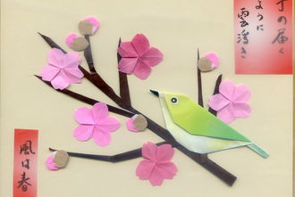
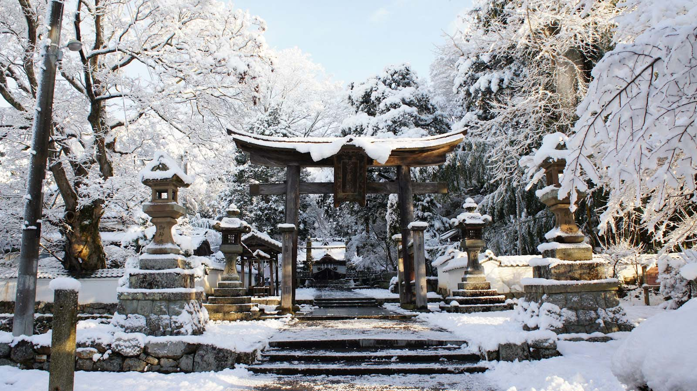
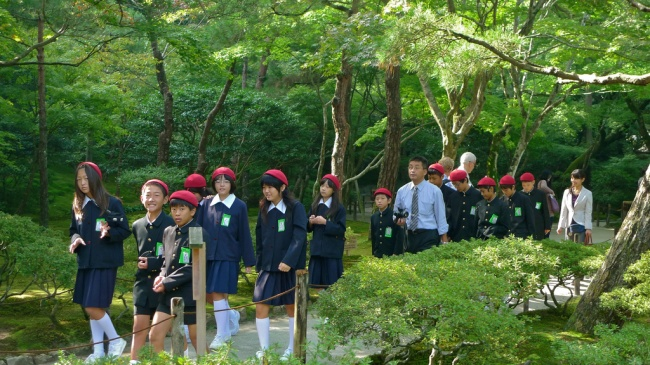
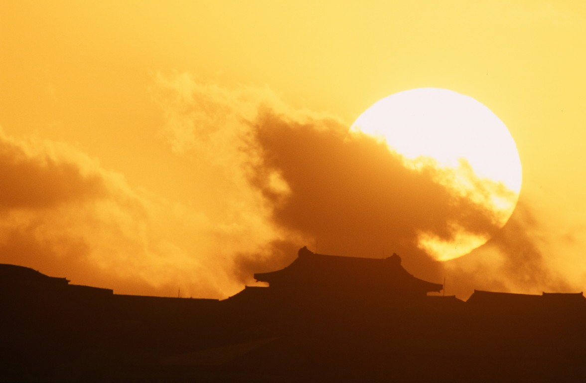

Глобальный климат менялся и меняется непрерывно, но человек и природа всегда, так или иначе, находили пути адаптации к изменениям.
Климат
Японский архипелаг, протянувшийся с севера на юг более, чем на 2 тыс. км и состоящий из четырёх основных островов: Хоккайдо, Хонсю, Сикоку и Кюсю, а также более 3 тыс. маленьких островов, лежит в так называемой Азиатской Зоне муссонов. Поэтому климат Японии в основном мягкий и достаточно влажный. Исключение составляет Хоккайдо, где преобладает субарктический климат с холодной снежной зимой и теплым летом.
- Климатические особенности
- Пеиод цветения сакуры
- Сезонная смена гардероба
- Сезонные события
Содержание
Климатические особенности Японии
 Каждый год в Японии, начиная с февраля и вплоть до середины марта, дуют сильные, со скоростью не менее восьми метров в секунду, южные ветры. На тихоокеанском побережье архипелага эти ветры считаются вестниками весны, а потому они получили название хару-итибан (яп. «первый по весне») и в телевизионных прогнозах погоды о них традиционно сообщают как о первых признаках наступления весеннего сезона.
Каждый год в Японии, начиная с февраля и вплоть до середины марта, дуют сильные, со скоростью не менее восьми метров в секунду, южные ветры. На тихоокеанском побережье архипелага эти ветры считаются вестниками весны, а потому они получили название хару-итибан (яп. «первый по весне») и в телевизионных прогнозах погоды о них традиционно сообщают как о первых признаках наступления весеннего сезона.
Япония – страна, омываемая со всех сторон морем; три четверти её территории занимают горные массивы, окаймляющие так называемый «тихоокеанский пояс». Длина береговой линии Японии составляет около 30 тысяч километров, то есть она длиннее береговой линии Америки. Когда в январе на самом юге Японии, на островах Окинавы, зацветает сакура, на северном острове Хоккайдо вовсю идёт снег. Расположенный к востоку от евразийского материка архипелаг состоит из четырёх крупных – Хоккайдо, Хонсю, Сикоку, Кюсю – и более 6 800 мелких островов, растянувшихся длинной цепью между 20° и 46° северной широты и 123° и 154° восточной долготы. Общая протяженность японских островов с юго-запада на северо-восток составляет около трёх тысяч километров. Именно поэтому для Японии характерно климатическое многообразие – погодные условия в разных регионах существенно отличаются.
Архипелаг пересекает несколько климатических поясов: от субарктической зоны, в которой находится северный остров Хоккайдо, и до субтропиков, где расположены острова Нансэй. Влажные муссоны, дующие с материка зимой, доходят до хребтов японских Альп в центральной части Хонсю, в результате чего на побережье Японского моря выпадает значительное количество дождей и снега, в то время как на тихоокеанском побережье устанавливается по большей части ясная погода.
| 1 | Тип: Японское море | 1a Охотское море | Зимние температуры ниже 0°C. Малое годовое количество осадков. |
| 1b Тохоку-Хоккайдо | В сентябре и зимние месяцы большое количество осадков. Средняя температура в январе-феврале ниже 0°C. | ||
| 1c Хокурику-Санъин | Среднемесячные температуры выше 0°C, зимой обильное выпадение снега. | ||
| 2 | 2 Тип: Кюсю | В июне-июле обильное выпадение дождей. | |
| 3 | 3 Тип: Нанкай | Обильное выпадение осадков в течение года. С июня по сентябрь наибольшее количество осадков. | |
| 4 | 4 Тип: Сэтоути | Теплый климат. Малое количество осадков в течение года. | |
| 5 | Тип: Восточная | 5a Восточный Хоккайдо | Морозная зима. Малое количество осадков. Обильное выпадение осадков в сентябре. |
| 5b Санрику-Дзёбан | Более низкие температуры и меньшая заснеженность по сравнению с прибрежными районами (Японское море), расположенными на той же широте. | ||
| 5c Токай-Канто | Обильное выпадение осадков в июне и с сентября по октябрь. Ясная погода зимой. | ||
| 5d Центральное плато | Высокая годовая амплитуда колебания температур, морозная зима, низкая заснеженность. | ||
| 6 | 6a Острова Нансэй | Теплый климат. Низкая годовая амплитуда колебания температур. Малое количество осадков в течение года. | |
| 6b Титидзима | Теплый климат. Низкая годовая амплитуда колебания температур. Обильное выпадение осадков в мае и в ноябре. | ||
Сакура "проходит" по Японии с января по май
Согласно определению главного управления гидрометеорологической службы, в Японии год четко разделяется на четыре сезона по характеру погодных условий: весна (с марта по май), лето (с июня по август), осень ( с сентября по ноябрь) и зима (с декабря по февраль). С середины июня в Японии начинается сезон дождей, который длится до середины июля. Вообще для японского лета характерно обильное выпадение осадков. Исключением является северный остров Хоккайдо, где летом осадки почти не выпадают, даже во влажном июне. Ханами, сезон любования цветущей сакурой, начинается в январе на южном острове Окинава, в течение следующих месяцев «фронт цветения сакуры» проходит по всей Японии, к маю достигая Хоккайдо на севере страны.
С каждым годом лето становится все жарче. Во многих регионах температура летом поднимается выше 30°C, а в некоторых местах термометры показывают даже больше 40°C. Так, например, в 2013 году в префектуре Коти была зафиксирована рекордно высокая температура в 41°C. Также, начиная с 2008 года участились так называемые «партизанские штормы» – внезапные кратковременные бури с выпадением более 50 мм осадков в час.
Коромогаэ: сезонная смена гардероба
Обычай сезонной смены одежды, который существует не только в государственных учреждениях, но и на частных фирмах и предприятиях, а также в школах, где ученики носят формы по сезону, получил название коромогаэ (яп. смена платья). Практически повсеместно в Японии первого июня происходит «переход» на летнюю одежду, а первого октября – на зимнюю. Из-за жаркого и влажного климата, а также из-за нехватки места в маленьких японских квартирах, с приходом нового сезона теплая одежда, пальто и куртки отправляются в химчистку, а затем, в сопровождении средства против моли, в чемоданы и пластиковые ящики, дожидаться следующей зимы. А их место в шкафу занимают легкие летние наряды, извлеченные из мешков и картонок. Обычай менять одежду по сезону зародился в Японии около тысячи лет назад, в эпоху Хэйан (794-1185).
В течение летних месяцев работники японских компаний, отправляясь на службу, одеваются в стиле cool biz (облегченный бизнес-стиль), который рекомендован министерством окружающей среды Японии. Например, стиль cool biz не подразумевает ношение галстука. Летом для охлаждения наряду с современными приспособлениями – такими как кондиционеры воздуха, вентиляторы и шейные платки с охлаждающим элементом – используются и традиционные способы: веер, бамбуковые жалюзи для затенения, утимидзу (поливка асфальта водой из ковшика) и выращивание «живой гардины» из вьющихся растений на окнах. Также популярны гардины с функцией защиты от ультрафиолетового излучения.
Когда наступает зима, из кладовок извлекаются обогреватели, печки и столики котацу. Специальной изоляционной клейкой лентой, которую можно купить в любом стойеннике, заклеиваются щели в оконных и балконных рамах, под ковер кладется теплоизоляционная фольгированная подкладка – все это делается ради утепления. Японское жилище тоже переживает «сезонную смену платья».
Ежегодные сезонные события
Год в Японии начинается весной, в апреле. Вокруг становится тепло, зацветает сакура, в школах отмечают начало учебного года, а на фирмах и предприятиях – начало фискального. Фотографии нарядно одетых школьников на фоне сакуры уже давно стали характерной особенностью весеннего времени. Летом, как правило, школы выходят на каникулы с конца июля по конец августа. Хотя в Тохоку и на Хоккайдо, а также еще в нескольких регионах с морозными и снежными зимами летние каникулы обычно более короткие, зато зимние – более продолжительные.
Четкая смена сезонов оказала огромное влияние на японскую культуру. Сезонность присутствует у японцев во всем: в поэзии, в живописи, в чайной церемонии, в искусстве аранжировки цветов, в кулинарии – все виды традиционных искусств подчинены этой цикличности. Можно даже сказать, что сложно представить себе, как развивалась бы традиционная японская культура, не будь в ней такой уникальной чувствительности к смене времен года, выражающейся в частности, и в языке со всеми его словами и фразами для описания особенностей каждого сезона.
Впрочем, традиционный уклад жизни, основанный на многовековом сосуществовании с природой, постепенно разрушается. В наше время в связи с урбанизацией резко уменьшилось количество зеленых зон, и все, что казалось существенным в прошлом, уже не кажется таковым сейчас. В мире природы тоже многое не так, как было раньше – видимо, сказываются аномальные климатические изменения. Сакура и слива зацветают не в сезон, а управлять их цветением человеку не под силу. Вот и выходит, что нередко к моменту традиционного праздника или сезонного торжества распустившиеся раньше времени цветы успевают завянуть и облететь. И с каждым падающим лепестком все больше падают духом устроители мероприятий.
Использованы материалы с сайта: Виртуальная Япония